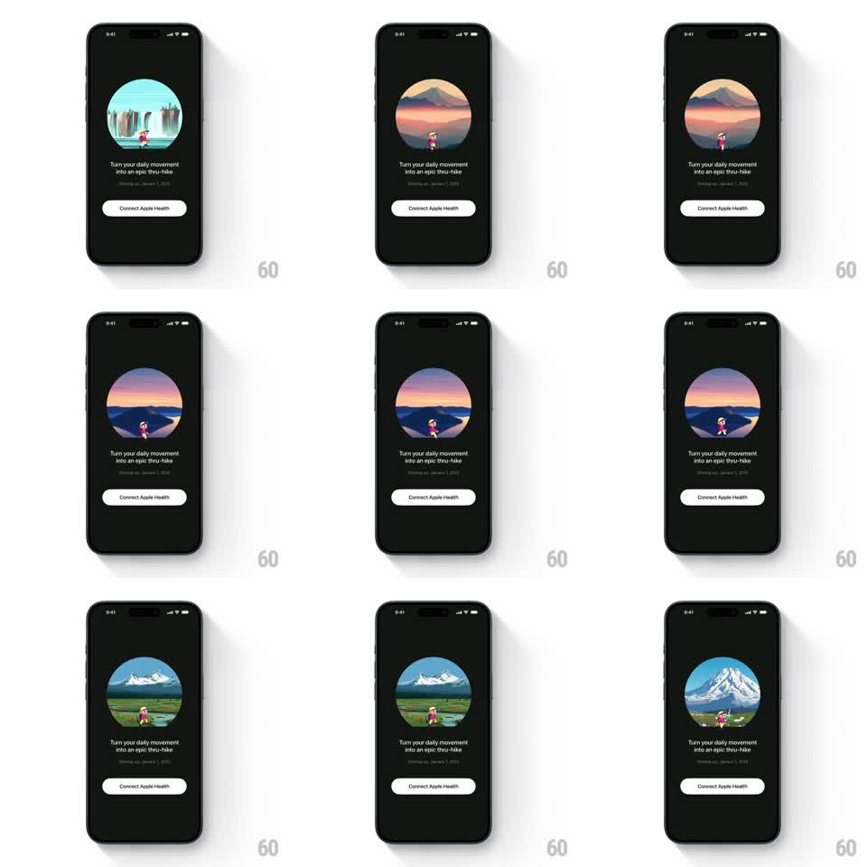

Media
Frame-by-frame

Rebuild this animation 1:1: Thru's Apple Health onboarding - a pixel-art hiker walks in place inside a circular illustration that crossfades through landscapes (waterfall, mountain sunset, alpine meadow) above the "Connect Apple Health" button.

Rebuild this animation 1:1: Thru's Apple Health onboarding - a pixel-art hiker walks in place inside a circular illustration that crossfades through landscapes (waterfall, mountain sunset, alpine meadow) above the "Connect Apple Health" button. ## Integration Integration: stack-agnostic spec - springs given as stiffness/damping, timed motions as duration + curve; map every value to your framework and animation library of choice. ## Scene Dark screen: a large circular illustration (teal waterfall, pink mountain dusk, blue-lake meadow) with a tiny pixel hiker walking across its lower third, "Turn your daily movement into an epic thru-hike" headline, a gray sub-line, and a white "Connect Apple Health" pill button. ## Motion spec Pattern: looping scenic crossfade with walk cycle, ~3s per landscape. - Walk: the hiker plays its 8-frame walk loop continuously, drifting slowly left-to-right inside the circle (full crossing ~6s) and bouncing 1px per step. - Crossfade: every 3s the landscape inside the circle crossfades to the next scene (600ms, ease-in-out); the hiker persists across the change. - Parallax: within each scene, the hiker moves at 1x while the background drifts at 0.3x. - Load: the circle scales in (0.9 -> 1, spring ~320/22) as headline and button fade up (300ms, 80ms stagger). ## Calibration - The circle masks everything - the hiker clips at its edge. - The walk never stops, even mid-crossfade. ## Reduced motion Static landscape; hiker stands; scenes change on 250ms fades only on demand. ## Don't miss - The hiker crosses scene changes seamlessly - it is a separate layer, never part of the crossfade. - Pixel art stays crisp: nearest-neighbor scaling, no blur.